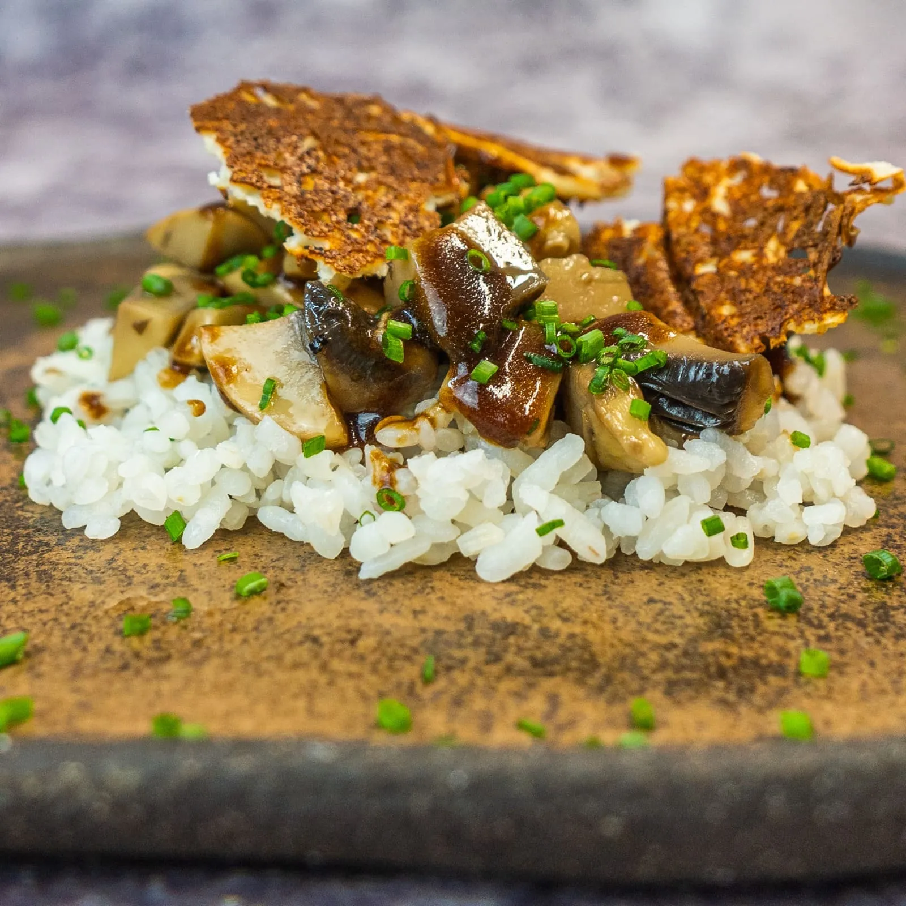

⏲ 35 minuts 👥 4 racions

Aquest cap de setmana us presentem una recepta molt especial. Es tracta de la tapa que farem en la
Berga Bolet de @bergacomercial, ja que enguany tornem a participar en aquesta gran festa de casa
nostra! Es tracta d'un gohan amb ceps, suc de ceps i parmesà cruixent.
Arran de les dificultats per trobar ceps que vam tenir a l'hora de gravar la recepta, l'hem fet
amb un altre bolet que trobem tota la temporada gràcies al cultiu i que és d'allò més resolutiu: el
xampinyó. Veureu que la combinació és ideal, i que la salsa dona una potència inoblidable al plat!
Ingredients:
- 250g d'arròs de sushi
- 200g de xampinyons
- 15g de ceps deshidratats
- 20g de salsa de soja
- 15g de mantega
- 250g de vi ranci
- 3 grans de pebre negre
- Cibulet
- Maicena
- 2 cullerades de vinagre d'arròs
- 1 cullerada de sucre
- Parmesà (o un altre formatge en pols)
- Aigua
- Oli, sal i pebre
- Netegem els 250 g d’arròs de sushi fins que no embruti l’aigua, i els afegim en una olla amb 300 g d’aigua. Quan arranqui el bull, tapem, deixem el foc al mínim i coem uns 15 minuts. Ho deixem reposar 15 minuts amb el foc parat.
- Escampem l’arròs amb una safata, i mentre l’anem refredant anem amanint amb 4 cullerades de vinagre, 25 g de sucre i una punta de sal.
- Tallem 200 g de xampinyons a daus i els confitem a foc baix uns 20 minuts, amb cibulet, farigola, romaní, pebre en gra i sal.
- Reduïm al màxim 250 g de vi ranci. Hi afegim 125 g d’aigua de cep sec rehidratat (ho hem de fer prèviament, durant una hora), i 20 g de salsa de soja. Texturitzem amb 15 g de mantega i midó de blat de moro diluït amb aigua.
- Fem el cruixent de formatge, amb parmesà en pols o formatge ratllat, a la paella o al forn.
- Emplatem amb una base fina d’arròs, els daus de xampinyons, el suc dels ceps, cibulet picat i cruixent de formatge.